| Característica | 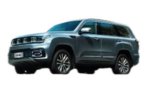 BAIC BJ605040 mm, Mild-Hybrid |
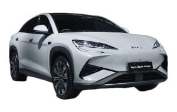 BYD Sealion 74830 mm, 100% eléctrico |
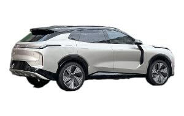 Lynk & Co 084820 mm, PHEV |
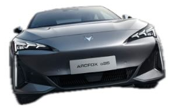 Arcfox S54820 mm, 100% eléctrico |
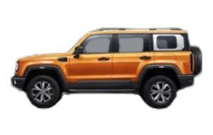 BAIC BJ40 Pro4790 mm, Naftero |
 Seal 5 DM-i4780 mm, PHEV Seal 5 DM-i4780 mm, PHEV |
 Seal U DM-i4775 mm, PHEV Seal U DM-i4775 mm, PHEV |
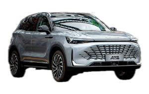 BAIC X55 Plus4740 mm, Naftero |
 Song Pro4738 mm, PHEV Song Pro4738 mm, PHEV |
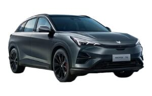 Arcfox T54690 mm, 100% eléctrico |
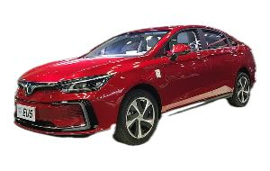 BAIC EU54670 mm, 100% eléctrico |
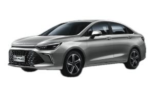 BAIC U5 Plus4660 mm, Naftero |
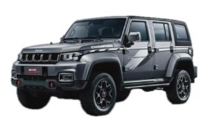 BAIC BJ40 Plus~4630mm (est.) · Naftero |
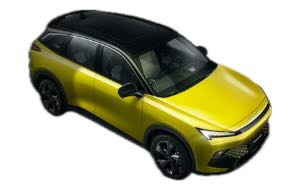 BAIC X55 II4620 mm, Naftero |
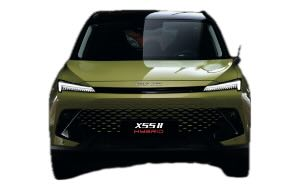 BAIC X55 II Hybrid~4620mm (est.) · Híbrido |
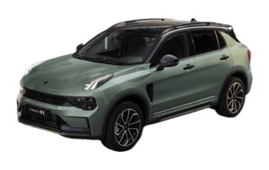 Lynk & Co 014550 mm, PHEV |
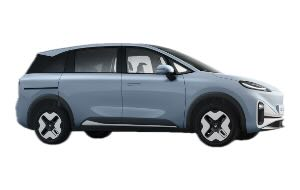 Arcfox Koala S4500 mm, 100% eléctrico |
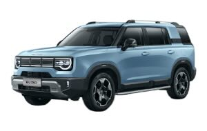 BAIC BJ30 4x2~4500mm (est.) · Híbrido |
 BAIC BJ30 4x4~4500mm (est.) · Híbrido BAIC BJ30 4x4~4500mm (est.) · Híbrido |
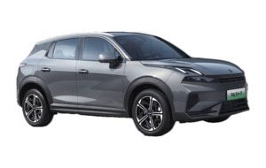 Lynk & Co 064350 mm, PHEV |
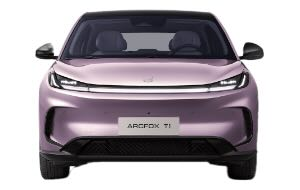 Arcfox T14337 mm, 100% eléctrico |
 Atto 2 DM-i4330 mm, PHEV Atto 2 DM-i4330 mm, PHEV |
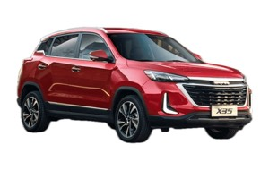 BAIC X354325 mm, Naftero |
 Yuan Pro4310 mm, 100% eléctrico Yuan Pro4310 mm, 100% eléctrico |
 Dolphin Mini3990 mm, 100% eléctrico Dolphin Mini3990 mm, 100% eléctrico |
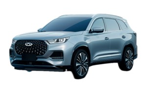 Chery Tiggo 8 ProNaftero |
 Haval H6 Pro HEVHEV Haval H6 Pro HEVHEV |
 Poer 4WDDiésel (pickup) Poer 4WDDiésel (pickup) |
 Tank 300Naftero Tank 300Naftero |
 Ora 03100% eléctrico Ora 03100% eléctrico |
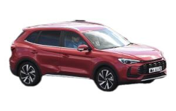 MG ZS HEVHEV |
Changan CS55 PlusPHEV | 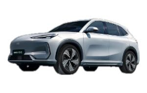 Geely EX5100% eléctrico |
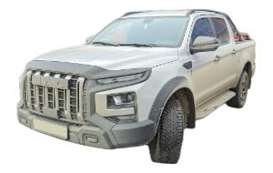 JAC T9Diésel (pickup) |
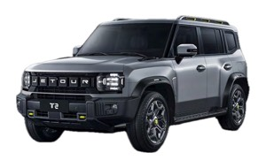 Jetour T2Naftero |
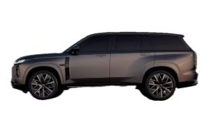 GAC S7PHEV |
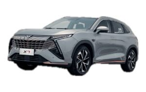 Kaiyi X7Naftero |
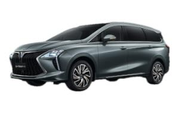 Forthing U-TourHEV |
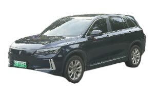 Skywell ET5100% eléctrico |
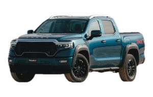 Foton Tunland V95617 mm, Naftero (pickup) |
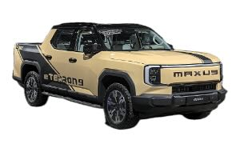 Maxus eTerron100% eléctrico (pickup) |
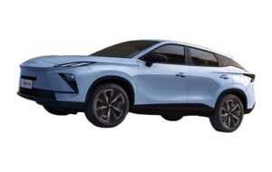 Omoda 54447 mm, HEV |
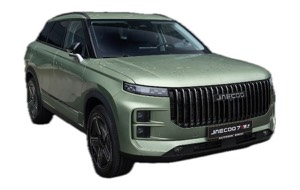 Jaecoo 74500 mm, PHEV |
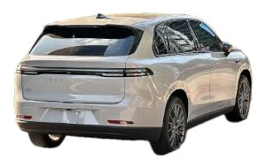 Leapmotor C104739 mm, REEV (enchufable) |
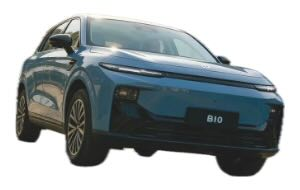 Leapmotor B104530 mm, REEV (enchufable) |
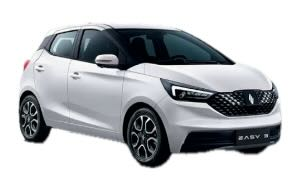 JMEV Easy 33720 mm, 100% eléctrico |
Chery Arrizo 84757 mm, PHEV | 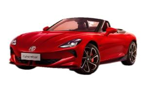 MG Cyberster4535 mm, 100% eléctrico |
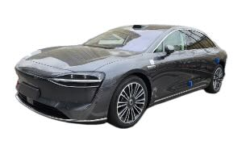 Stelato S95160 mm, 100% eléctrico |
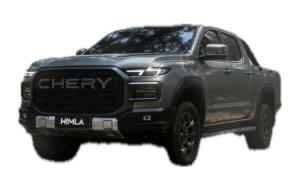 Chery Himla5320 mm, Diésel (pickup) |
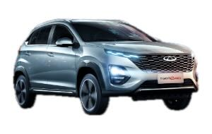 Chery Tiggo 2 Pro Max4200 mm, Naftero |
Chery Tiggo 4 Hybrid4320 mm, HEV | Chery Tiggo 4 Pro4320 mm, Naftero | 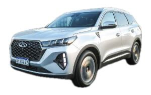 Chery Tiggo 7 Pro MHEV4500 mm, Mild-Hybrid |
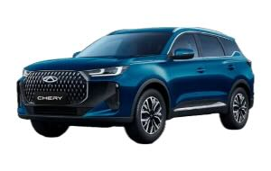 Chery Tiggo 7 Pro PHEVPHEV |
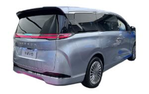 Arcfox V95300 mm, PHEV |
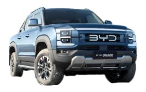 BYD Shark5457 mm, PHEV (pickup) |
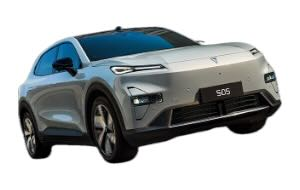 Deepal S054620 mm, PHEV |
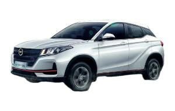 DFSK Glory 5004380 mm, Naftero |
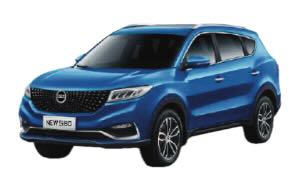 DFSK Glory 5804680 mm, Naftero |
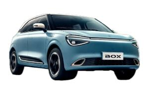 Dongfeng Box4020 mm, 100% eléctrico |
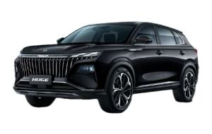 Dongfeng Huge4720 mm, HEV |
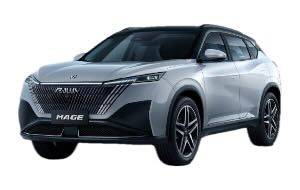 Dongfeng Mage4650 mm, HEV |
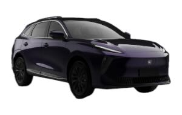 Forthing Friday REEV4600 mm, PHEV |
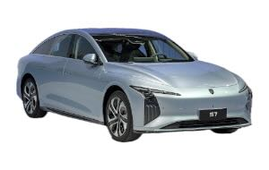 Forthing S7 REEV4940 mm, PHEV |
Forthing T5 EVO4565 mm, Naftero | Foton Tunland G75340 mm, Diésel (pickup) | GAC Aion V4605 mm, 100% eléctrico | Ora 5 HEV4471 mm, HEV |  Haval H7 4WD4800 mm, Naftero Haval H7 4WD4800 mm, Naftero |
 Haval H7 HEV4800 mm, HEV Haval H7 HEV4800 mm, HEV |
 Haval Jolion Pro HEV4470 mm, HEV Haval Jolion Pro HEV4470 mm, HEV |
JAC EV 30X4025 mm, 100% eléctrico | JAC JS44410 mm, Naftero | JAC JS6 PHEV4605 mm, PHEV | JAC JS8 Pro4825 mm, Naftero | JAC S24153 mm, Naftero | JAC T85325 mm, Diésel (pickup) | Jetour Dashing4590 mm, Naftero | Jetour G7005198 mm, PHEV | Jetour T1 i-DM4705 mm, PHEV | Jetour T14705 mm, Naftero | Jetour T2 i-DM4785 mm, PHEV | Jetour X504397 mm, Naftero | Jetour X70 Plus4724 mm, Naftero | Jetour X704743 mm, Naftero | JMC Grand Avenue5435 mm, Naftero (pickup) | Kaiyi X3 Pro4400 mm, Naftero | Kaiyi X34400 mm, Naftero | Leapmotor B03X4270 mm, 100% eléctrico | Lynk & Co 9005240 mm, PHEV | Maxus D905046 mm, Mild-Hybrid | Maxus T60 Max5365 mm, Diésel (pickup) | MG 3 HEV4113 mm, HEV | MG HS HEV4670 mm, HEV | Omoda 74660 mm, PHEV | Omoda E54545 mm, 100% eléctrico | Soueast S064616 mm, PHEV | DFSK E5 Plus4760 mm, PHEV | DFSK Glory 6004720 mm, Naftero | Forthing T5 HEV4565 mm, HEV | Foton Tunland V75617 mm, Mild-Hybrid (pickup) | JMC Grand Avenue ProNaftero (pickup) | Kaiyi X7 Hybrid4710 mm, PHEV | Maxus T605365 mm, Diésel (pickup) | MG 34120 mm, Naftero | MG ZS4430 mm, Naftero | SWM G03F4605 mm, Naftero | Changan Eado Plus PHEV4770 mm, PHEV | Forthing V9HEV | GAC Aion ES4810 mm, 100% eléctrico | GAC Aion UT4270 mm, 100% eléctrico | GAC Emkoo HEV4680 mm, HEV | GAC Empow4700 mm, Naftero | GAC GS3 Emzoom4446 mm, Naftero | GAC GS84980 mm, Naftero | Geely Icon4350 mm, Naftero |  Haval H6 4WD4653 mm, Naftero Haval H6 4WD4653 mm, Naftero |
 Haval H6 GTNaftero Haval H6 GTNaftero |
 Haval Jolion HEVHEV Haval Jolion HEVHEV |
Rely R85370 mm, Diésel (pickup) | smart #14300 mm, 100% eléctrico | smart #34400 mm, 100% eléctrico | SWM G03F EDi4605 mm, REEV (enchufable) |  Ford Territory Híbrida4630 mm, Híbrido Ford Territory Híbrida4630 mm, Híbrido |
 Chevrolet Captiva PHEV4745 mm, Híbrido enchufable Chevrolet Captiva PHEV4745 mm, Híbrido enchufable |
 Nissan X-Trail e-POWER Exclusive e-4ORCE4645 mm, Híbrido Nissan X-Trail e-POWER Exclusive e-4ORCE4645 mm, Híbrido |
 Renault Koleos esprit Alpine full hybrid E-Tech4780 mm, Híbrido Renault Koleos esprit Alpine full hybrid E-Tech4780 mm, Híbrido |
 Subaru All-New Forester Hybrid4655 mm, Híbrido Subaru All-New Forester Hybrid4655 mm, Híbrido |
 Hyundai Tucson Hybrid4640 mm, Híbrido Hyundai Tucson Hybrid4640 mm, Híbrido |
 Toyota Corolla Cross SEG HEV4460 mm, Híbrido Toyota Corolla Cross SEG HEV4460 mm, Híbrido |
 Toyota Yaris Cross SEG HEV4310 mm, Híbrido Toyota Yaris Cross SEG HEV4310 mm, Híbrido |
 Lexus UX 300h4495 mm, Híbrido Lexus UX 300h4495 mm, Híbrido |
 Toyota Hilux GR-Sport IV5325 mm, Diésel (pickup) Toyota Hilux GR-Sport IV5325 mm, Diésel (pickup) |
 Fiat Cronos Precision 1.3 CVT4364 mm, Naftero Fiat Cronos Precision 1.3 CVT4364 mm, Naftero |
 Ford Ranger LTD+ 3.0L V6 4WD5370 mm, Diésel (pickup) Ford Ranger LTD+ 3.0L V6 4WD5370 mm, Diésel (pickup) |
 Peugeot 208 GT T2004053 mm, Naftero Peugeot 208 GT T2004053 mm, Naftero |
 Volkswagen Amarok V6 Black Style5350 mm, Diésel (pickup) Volkswagen Amarok V6 Black Style5350 mm, Diésel (pickup) |
 Volkswagen Tera Outfit 170 TSI4151 mm, Naftero Volkswagen Tera Outfit 170 TSI4151 mm, Naftero |
 Toyota Yaris Hatchback S4145 mm, Naftero Toyota Yaris Hatchback S4145 mm, Naftero |
 Volkswagen Polo Highline 170 TSI4074 mm, Naftero Volkswagen Polo Highline 170 TSI4074 mm, Naftero |
 Renault Kwid Iconic Outsider3680 mm, Naftero Renault Kwid Iconic Outsider3680 mm, Naftero |
 Volkswagen Taos Highline Bi Tono 250 TSI4467 mm, Naftero Volkswagen Taos Highline Bi Tono 250 TSI4467 mm, Naftero |
 Chevrolet Onix RS Turbo AT4169 mm, Naftero Chevrolet Onix RS Turbo AT4169 mm, Naftero |
 Renault Kardian Iconic 200 EDC4120 mm, Naftero Renault Kardian Iconic 200 EDC4120 mm, Naftero |
 Jeep Compass Blackhawk4404 mm, Naftero Jeep Compass Blackhawk4404 mm, Naftero |
 Volkswagen Nivus Outfit 200 TSI4272 mm, Naftero Volkswagen Nivus Outfit 200 TSI4272 mm, Naftero |
 Fiat Strada Ultra T200 CVT4448 mm, Naftero (pickup) Fiat Strada Ultra T200 CVT4448 mm, Naftero (pickup) |
 Fiat Argo Drive 1.3 CVT4031 mm, Naftero Fiat Argo Drive 1.3 CVT4031 mm, Naftero |
 Chevrolet S10 High Country5344 mm, Diésel (pickup) Chevrolet S10 High Country5344 mm, Diésel (pickup) |
 Fiat Toro Volcano 2.2TD AT9 4x44954 mm, Diésel (pickup) Fiat Toro Volcano 2.2TD AT9 4x44954 mm, Diésel (pickup) |
 Citroën C3 T200 Feel Pack You!3981 mm, Naftero Citroën C3 T200 Feel Pack You!3981 mm, Naftero |
 Toyota Corolla HEV SEG4630 mm, Híbrido Toyota Corolla HEV SEG4630 mm, Híbrido |
 Jeep Renegade Willys4268 mm, Naftero Jeep Renegade Willys4268 mm, Naftero |
 Citroën Basalt T200 Dark Edition4343 mm, Naftero Citroën Basalt T200 Dark Edition4343 mm, Naftero |
 Chevrolet Onix Plus Premier AT Turbo4480 mm, Naftero Chevrolet Onix Plus Premier AT Turbo4480 mm, Naftero |
 Fiat Titano Ranch AT8 AWD5330 mm, Diésel (pickup) Fiat Titano Ranch AT8 AWD5330 mm, Diésel (pickup) |
 Citroën Aircross T200 Shine 74320 mm, Naftero Citroën Aircross T200 Shine 74320 mm, Naftero |
 Toyota SW4 GR-Sport4795 mm, Diésel Toyota SW4 GR-Sport4795 mm, Diésel |
 Fiat Pulse Impetus 1.0T CVT4095 mm, Naftero Fiat Pulse Impetus 1.0T CVT4095 mm, Naftero |
 Nissan Kicks Exclusive4365 mm, Naftero Nissan Kicks Exclusive4365 mm, Naftero |
 Chevrolet Montana 1.2T RS AT4717 mm, Naftero (pickup) Chevrolet Montana 1.2T RS AT4717 mm, Naftero (pickup) |
 Hyundai HB20 Platinum Safety AT4015 mm, Naftero Hyundai HB20 Platinum Safety AT4015 mm, Naftero |
 Fiat Fastback Turbo 270 AT64440 mm, Naftero Fiat Fastback Turbo 270 AT64440 mm, Naftero |
 Fiat Mobi Trekking 1.0 MT53596 mm, Naftero Fiat Mobi Trekking 1.0 MT53596 mm, Naftero |
 RAM Dakota Laramie Night Edition5356 mm, Diésel (pickup) RAM Dakota Laramie Night Edition5356 mm, Diésel (pickup) |
 Ford Maverick Tremor 2.0L 4WD5092 mm, Naftero (pickup) Ford Maverick Tremor 2.0L 4WD5092 mm, Naftero (pickup) |
 Nissan Frontier PRO-4X 4x4 AT5260 mm, Diésel (pickup) Nissan Frontier PRO-4X 4x4 AT5260 mm, Diésel (pickup) |
 RAM Rampage R/T5028 mm, Naftero (pickup) RAM Rampage R/T5028 mm, Naftero (pickup) |
 Honda WR-V EXL4325 mm, Naftero Honda WR-V EXL4325 mm, Naftero |
 Honda New HR-V EXL4330 mm, Naftero Honda New HR-V EXL4330 mm, Naftero |
 Renault Duster Iconic 1.3T 4WD4341 mm, Naftero Renault Duster Iconic 1.3T 4WD4341 mm, Naftero |
 Kia K3 Cross GT-Line 1.6 A/T4295 mm, Naftero Kia K3 Cross GT-Line 1.6 A/T4295 mm, Naftero |
 Chevrolet Spin 1.8 Premier AT 7A4420 mm, Naftero Chevrolet Spin 1.8 Premier AT 7A4420 mm, Naftero |
 Renault Boreal Iconic4556 mm, Naftero Renault Boreal Iconic4556 mm, Naftero |
 Volkswagen Saveiro Extreme Cabina Doble 1.6 MSI4497 mm, Naftero (pickup) Volkswagen Saveiro Extreme Cabina Doble 1.6 MSI4497 mm, Naftero (pickup) |
 Nissan Kait Exclusive4304 mm, Naftero Nissan Kait Exclusive4304 mm, Naftero |
 Ford Everest Titanium 2.3L EcoBoost4914 mm, Naftero Ford Everest Titanium 2.3L EcoBoost4914 mm, Naftero |
 Renault Arkana E-Tech Hybrid Esprit Alpine4568 mm, Mild-Hybrid Renault Arkana E-Tech Hybrid Esprit Alpine4568 mm, Mild-Hybrid |
 Renault Oroch Outsider 1.3 TCe 4WD4719 mm, Naftero (pickup) Renault Oroch Outsider 1.3 TCe 4WD4719 mm, Naftero (pickup) |
 Volkswagen Virtus Exclusive 250 TSI4560 mm, Naftero Volkswagen Virtus Exclusive 250 TSI4560 mm, Naftero |
 Renault Kangoo Stepway 1.6 SCe4397 mm, Naftero Renault Kangoo Stepway 1.6 SCe4397 mm, Naftero |
 Nissan Versa Exclusive CVT4495 mm, Naftero Nissan Versa Exclusive CVT4495 mm, Naftero |
 Chevrolet Sonic 1.0T RS AT4228 mm, Naftero Chevrolet Sonic 1.0T RS AT4228 mm, Naftero |
 Hyundai Nueva Creta Safety+4300 mm, Naftero Hyundai Nueva Creta Safety+4300 mm, Naftero |
 Fiat 600 Hybrid 1.2 eDCT4178 mm, Mild-Hybrid Fiat 600 Hybrid 1.2 eDCT4178 mm, Mild-Hybrid |
 Ford F-150 Raptor 3.5L V6 EcoBoost5908 mm, Naftero (pickup) Ford F-150 Raptor 3.5L V6 EcoBoost5908 mm, Naftero (pickup) |
 Audi SQ5 Sportback TFSI quattro S tronic4717 mm, Mild-Hybrid Audi SQ5 Sportback TFSI quattro S tronic4717 mm, Mild-Hybrid |
 Renault Logan Intens 1.64359 mm, Naftero Renault Logan Intens 1.64359 mm, Naftero |
 Mercedes-AMG GLC 43 4MATIC4749 mm, Mild-Hybrid Mercedes-AMG GLC 43 4MATIC4749 mm, Mild-Hybrid |
 Jeep Commander Blackhawk4769 mm, Naftero Jeep Commander Blackhawk4769 mm, Naftero |
 Mercedes-AMG A 45 S 4MATIC+4453 mm, Naftero Mercedes-AMG A 45 S 4MATIC+4453 mm, Naftero |
 Hyundai HB20S Platinum Safety AT4325 mm, Naftero Hyundai HB20S Platinum Safety AT4325 mm, Naftero |
 BMW X1 sDrive18i Efficient4500 mm, Naftero BMW X1 sDrive18i Efficient4500 mm, Naftero |
 Nissan Sentra SR CVT4645 mm, Naftero Nissan Sentra SR CVT4645 mm, Naftero |
 Volkswagen Tiguan R-Line 250 TSI4670 mm, Naftero Volkswagen Tiguan R-Line 250 TSI4670 mm, Naftero |
 Peugeot 3008 GT4542 mm, Naftero Peugeot 3008 GT4542 mm, Naftero |
 Audi Q3 Sportback Advanced4531 mm, Naftero Audi Q3 Sportback Advanced4531 mm, Naftero |
 BMW X3 M50 xDrive M Performance4755 mm, Mild-Hybrid BMW X3 M50 xDrive M Performance4755 mm, Mild-Hybrid |
 Volkswagen Vento GLI 350 TSI4720 mm, Naftero Volkswagen Vento GLI 350 TSI4720 mm, Naftero |
 Suzuki Jimny 5 puertas GLX AT3985 mm, Naftero Suzuki Jimny 5 puertas GLX AT3985 mm, Naftero |
 Honda ZR-V Touring4568 mm, Naftero Honda ZR-V Touring4568 mm, Naftero |
 Mercedes-Benz GLA 250 4MATIC AMG-Line4412 mm, Mild-Hybrid Mercedes-Benz GLA 250 4MATIC AMG-Line4412 mm, Mild-Hybrid |
 Suzuki Swift Hybrid GLX CVT3860 mm, Mild-Hybrid Suzuki Swift Hybrid GLX CVT3860 mm, Mild-Hybrid |
 BMW M135 xDrive4361 mm, Naftero BMW M135 xDrive4361 mm, Naftero |
 Peugeot 2008 GT T2004308 mm, Naftero Peugeot 2008 GT T2004308 mm, Naftero |
 Mitsubishi L200 GLS 6AT 4WD Full5320 mm, Naftero Mitsubishi L200 GLS 6AT 4WD Full5320 mm, Naftero |
 Audi A3 Sportback 2.0 S line TFSI4352 mm, Naftero Audi A3 Sportback 2.0 S line TFSI4352 mm, Naftero |
 Audi A5 Sedán S line quattro4829 mm, Mild-hybrid Audi A5 Sedán S line quattro4829 mm, Mild-hybrid |
 BMW M240i xDrive Coupé4548 mm, Mild-hybrid BMW M240i xDrive Coupé4548 mm, Mild-hybrid |
 Chevrolet Silverado High Country5915 mm, Naftero Chevrolet Silverado High Country5915 mm, Naftero |
 Chevrolet Spark EUV Activ4003 mm, Eléctrico Chevrolet Spark EUV Activ4003 mm, Eléctrico |
 Chevrolet Trailblazer High Country4887 mm, Naftero Chevrolet Trailblazer High Country4887 mm, Naftero |
 Citroën C4 Hybrid MAX4350 mm, Mild-hybrid Citroën C4 Hybrid MAX4350 mm, Mild-hybrid |
 Ford Mustang Dark Horse 5.0L V84794 mm, Naftero Ford Mustang Dark Horse 5.0L V84794 mm, Naftero |
 Mercedes-Benz C 300 AMG-Line4751 mm, Mild-hybrid Mercedes-Benz C 300 AMG-Line4751 mm, Mild-hybrid |
 Mercedes-Benz CLA 200 Progressive4692 mm, Naftero Mercedes-Benz CLA 200 Progressive4692 mm, Naftero |
 Mercedes-Benz GLB 250 4MATIC Progressive4634 mm, Mild-hybrid Mercedes-Benz GLB 250 4MATIC Progressive4634 mm, Mild-hybrid |
 Mercedes-Benz GLC 300 4MATIC Coupé AMG-Line4764 mm, Mild-hybrid Mercedes-Benz GLC 300 4MATIC Coupé AMG-Line4764 mm, Mild-hybrid |
 Renault Alaskan Iconic 2.3 dCi 190 4WD AT5318 mm, Naftero Renault Alaskan Iconic 2.3 dCi 190 4WD AT5318 mm, Naftero |
 Subaru Crosstrek Hybrid Limited ES4480 mm, Híbrido Subaru Crosstrek Hybrid Limited ES4480 mm, Híbrido |
 Audi A1 Sportback 30 TFSI4029 mm, Naftero Audi A1 Sportback 30 TFSI4029 mm, Naftero |
 DS 7 Plug-in Hybrid AWD 300 Pallas4593 mm, Híbrido enchufable DS 7 Plug-in Hybrid AWD 300 Pallas4593 mm, Híbrido enchufable |
 MINI Countryman S ALL4 Favoured4433 mm, Naftero MINI Countryman S ALL4 Favoured4433 mm, Naftero |
 MINI Cooper S Cabrio3879 mm, Naftero MINI Cooper S Cabrio3879 mm, Naftero |
 Volvo XC60 T8 AWD Plus4708 mm, Híbrido enchufable Volvo XC60 T8 AWD Plus4708 mm, Híbrido enchufable |
 Mitsubishi Outlander 2.5L GLS AT Full4710 mm, Naftero Mitsubishi Outlander 2.5L GLS AT Full4710 mm, Naftero |
 Audi Q2 40 TFSI quattro4208 mm, Naftero Audi Q2 40 TFSI quattro4208 mm, Naftero |
 BMW M340i xDrive M Performance4713 mm, Naftero BMW M340i xDrive M Performance4713 mm, Naftero |
 BMW X2 xDrive20i M Sport4554 mm, Naftero BMW X2 xDrive20i M Sport4554 mm, Naftero |
 BMW X4 xDrive30i M Sport4752 mm, Naftero BMW X4 xDrive30i M Sport4752 mm, Naftero |
 Honda CR-V Advanced Hybrid4706 mm, Híbrido Honda CR-V Advanced Hybrid4706 mm, Híbrido |
 Kia K3 Sedán GT-Line 1.6 A/T4545 mm, Naftero Kia K3 Sedán GT-Line 1.6 A/T4545 mm, Naftero |
 Kia Seltos LX 1.5 A/T4385 mm, Naftero Kia Seltos LX 1.5 A/T4385 mm, Naftero |
 Kia Sportage X-Line 2.0 CRDi AWD4685 mm, Naftero Kia Sportage X-Line 2.0 CRDi AWD4685 mm, Naftero |
 Peugeot 408 GT4687 mm, Naftero Peugeot 408 GT4687 mm, Naftero |
 RAM 1500 Laramie Night Edition5903 mm, Naftero RAM 1500 Laramie Night Edition5903 mm, Naftero |
 Porsche 911 Turbo S Cabriolet4551 mm, Híbrido Porsche 911 Turbo S Cabriolet4551 mm, Híbrido |
 Porsche Cayenne Turbo GT4932 mm, Naftero Porsche Cayenne Turbo GT4932 mm, Naftero |
 Porsche Macan GTS4726 mm, Naftero Porsche Macan GTS4726 mm, Naftero |
 Subaru All New WRX 2.4T Performance ES4670 mm, Naftero Subaru All New WRX 2.4T Performance ES4670 mm, Naftero |
 Subaru All New Impreza 2.0 Limited ES4475 mm, Naftero Subaru All New Impreza 2.0 Limited ES4475 mm, Naftero |
 Peugeot 5008 GT4791 mm, Naftero Peugeot 5008 GT4791 mm, Naftero |
 Citroën C5 Aircross MAX4652 mm, Naftero Citroën C5 Aircross MAX4652 mm, Naftero |
 Kia K4 Sedán GT-Line 2.0 A/T4710 mm, Naftero Kia K4 Sedán GT-Line 2.0 A/T4710 mm, Naftero |
 Hyundai Santa Fe 2.5 T-GDI 4WD4830 mm, Naftero Hyundai Santa Fe 2.5 T-GDI 4WD4830 mm, Naftero |
 Honda Civic Advanced Hybrid4679 mm, Híbrido Honda Civic Advanced Hybrid4679 mm, Híbrido |
 Lexus NX 450h+4660 mm, Híbrido enchufable Lexus NX 450h+4660 mm, Híbrido enchufable |
 BMW M2 Coupé4580 mm, Naftero BMW M2 Coupé4580 mm, Naftero |
 BMW X6 xDrive40i M Sport Pro4960 mm, Mild-hybrid BMW X6 xDrive40i M Sport Pro4960 mm, Mild-hybrid |
 Volkswagen T-Cross Highline 200 TSI4218 mm, Naftero Volkswagen T-Cross Highline 200 TSI4218 mm, Naftero |
 Mercedes-Benz GLE 450 4MATIC AMG-Line4924 mm, Mild-hybrid Mercedes-Benz GLE 450 4MATIC AMG-Line4924 mm, Mild-hybrid |
 Renault Sandero Intens 1.64070 mm, Naftero Renault Sandero Intens 1.64070 mm, Naftero |
 Kia Tasman X-Pro 2.5 TGDI 4x4 AT5410 mm, Naftero Kia Tasman X-Pro 2.5 TGDI 4x4 AT5410 mm, Naftero |
 Audi S3 Sportback TFSI quattro4354 mm, Naftero Audi S3 Sportback TFSI quattro4354 mm, Naftero |
 BMW 430i Coupé M Sport4768 mm, Naftero BMW 430i Coupé M Sport4768 mm, Naftero |
 Range Rover Evoque S4371 mm, Mild-Hybrid Range Rover Evoque S4371 mm, Mild-Hybrid |
 Toyota GR Yaris AT3995 mm, Naftero Toyota GR Yaris AT3995 mm, Naftero |
 Toyota Land Cruiser 300 VX HEV5005 mm, Híbrido Toyota Land Cruiser 300 VX HEV5005 mm, Híbrido |
 BMW 118 Sportline4361 mm, Naftero BMW 118 Sportline4361 mm, Naftero |
 BMW 220i Coupé4537 mm, Naftero BMW 220i Coupé4537 mm, Naftero |
 Ford Bronco Sport Badlands 2.0L 4WD4411 mm, Naftero Ford Bronco Sport Badlands 2.0L 4WD4411 mm, Naftero |
 Toyota RAV4 PHEV XSE4600 mm, PHEV Toyota RAV4 PHEV XSE4600 mm, PHEV |
 Volkswagen T-Cross Extreme 200 TSI4218 mm, Naftero Volkswagen T-Cross Extreme 200 TSI4218 mm, Naftero |
|---|
![Autolofy]() Elegí tu 0km
Elegí tu 0km
265 autos y sus fichas oficiales.